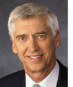

|
|
|
Call it a big tent, call it strange bedfellows, the fact is, the current water and climate change crisis in the American West
cannot be resolved without an innovative, multifaceted approach. This month, we ask two water experts with very different regional
and institutional standpoints to tell us something about how this region-wide problem looks to them. Steve Whitney,
Program Officer for the Bullitt Foundation in Seattle and a Project
Team member, sees things from the heart of the Pacific Northwest and the perspective of an environmental activist. Rick Holmes,
a Project Adviser, is with the Southern Nevada Water Authority,
which is responsible for the water needs of a growing population in a place and time of dwindling water resources. Since this is a
Carpe Diem Project newsletter we were also interested in hearing how our participants view us.

Kimery Wiltshire
Director, Carpe Diem Project
|
AN INTERVIEW WITH STEVE WHITNEY
Reform is Inevitable
|
"The fact that our system of water management leads to dry riverbeds every summer tells
me something's not right."
|
|
|
AN INTERVIEW WITH RICK HOLMES
Managing Scarcity
|

"Most of the reliable water supplies in the West are already allocated. The issue now
is how scarcity is to be shared."
|
|
Q: In the Pacific Northwest, what major impacts is climate change having on water resources, and what
do you expect looking ahead?
A: First of all, the Pacific Northwest is a very diverse region, with areas lying east of the Cascade Range
affected somewhat differently than areas to the West.
Read more.
|
|
Q: In Southern Nevada, what major impacts is climate change having on water resources, and what do you expect
looking ahead?
A: Ninety percent of our water comes from the Colorado River. Climate change has created a huge expansion of
uncertainty about future conditions in the Colorado Basin, and that system was already highly variable.
Read more.
|
|
|